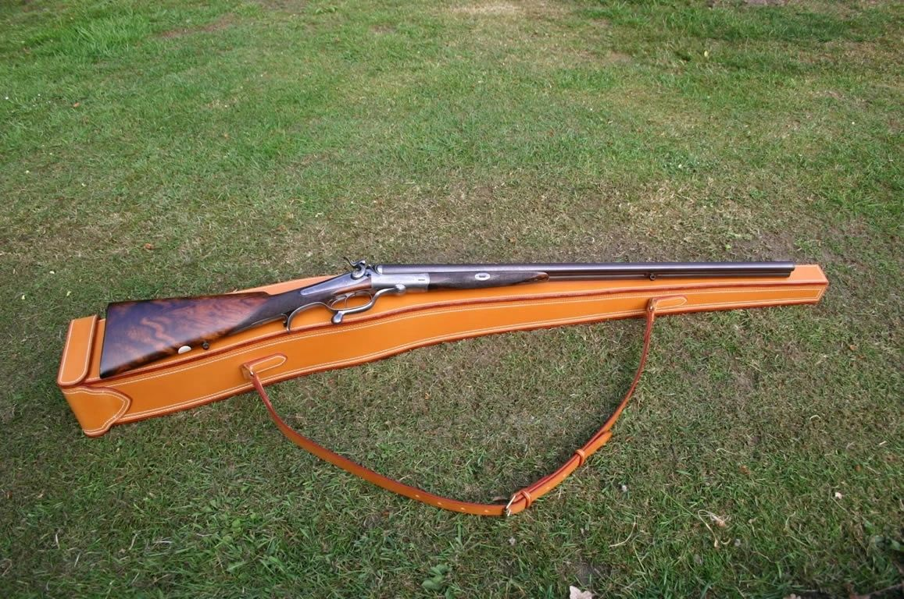
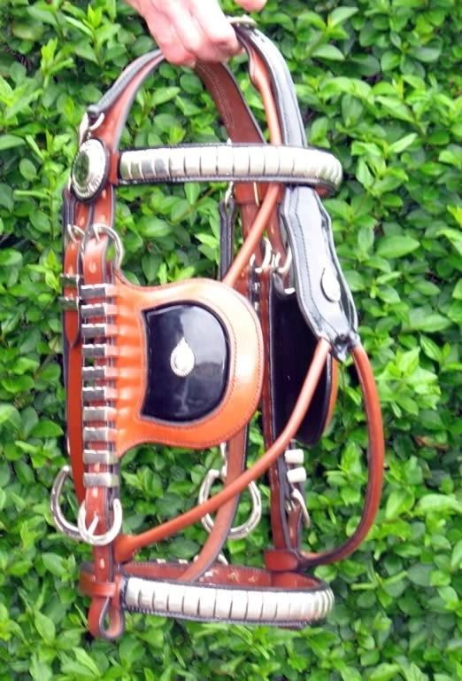
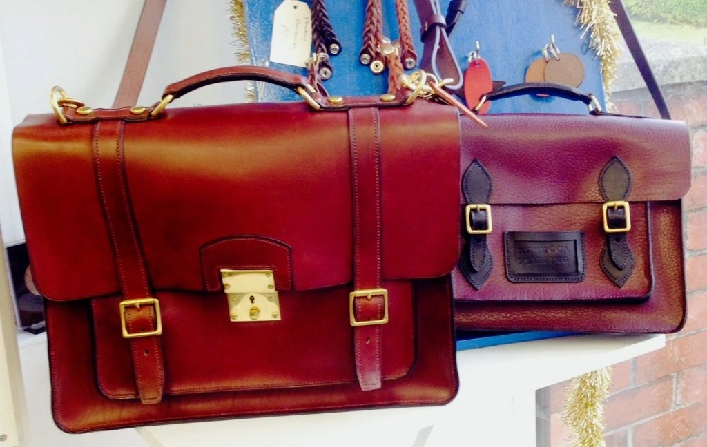

Shooting leather goods
Cartridge bags, rifle slips and cases made to the same standard as the saddlery — see the full range on the Services page.
Chris Taylor and his team of Master Saddlers make and repair bridles, saddles and harness to measure, craft bespoke leather goods, and run hands-on leatherwork and saddle-fitting courses from the workshop in Southport.
Bespoke bridles, harness and saddle work made to measure, plus repairs and refitting — through to shooting bags and leather accessories. Nothing is off-the-shelf.

Cartridge bags, rifle slips and cases made to the same standard as the saddlery — see the full range on the Services page.

Riding, driving, in-hand and presentation bridles made to any style and size, with a free measuring service for local customers.

Belts, watch straps, satchels and bespoke dog collars, all made from the same workshop.
Master Saddler
President of the Society of Master Saddlers — the trade body's own national credential for the craft.
Master Saddler & Master Harness Maker
32 years' experience making and fitting saddlery and harness.
Saddler
Graduate of Capel Manor College, bringing current formal training into the workshop.
From a two-day taster through to City & Guilds-linked saddle flocking and adjustment certification, following the Society of Master Saddlers' own curriculum.
“For a basic leatherwork course it surpassed my expectations completely.” Course evaluation form
“Excellent, felt more like a workshop and not a classroom.” Course evaluation form
“A thoroughly enjoyable week that has ignited a real spark to take this further.” Course evaluation form